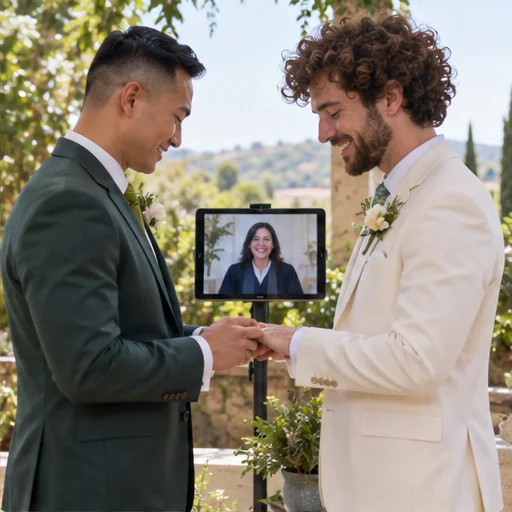

חתונה ביוטה או בקפריסין? כך משווים מסלולים

יוטה וקפריסין מציעות דרכים שונות לחגוג חתונה אזרחית. נשווה בין אופי החוויה, ההכנות והנוכחות הנדרשת כדי לעזור לכם להבין איזה מסלול מתאים לתכניות שלכם.
מה בעצם שונה בין המסלולים
לאחר קבלת הרישיון, אתם בוחרים מועד ומתאמים בעצמכם עם עורך או עורכת טקס מוסמכים ביוטה. דאגו לעדים, לקישור ולהנחיות הגורם המוסמך.
משווים מסמכים ומאמץ
במסלול Utah County נדרשים מסמך זיהוי ממשלתי ופרטים אישיים; כל אחד מבני הזוג מבצע אימות זהות וחותם בעצמו. בדקו את דרישות המחוז לפני ההגשה. גירושים סמוך לבקשה עשויים לדרוש מסמך נוסף, ואימות ידני עלול להוסיף זמן. אחרי הטקס בדקו איזה סוג תעודה ואימות דרושים לשימוש בישראל.
בודקים את החוויה שתתאים לכם
טקס מרחוק עשוי להתאים למי שרוצה לחגוג עם עדים ואורחים ממקומות שונים, מתקשה לטוס או מעדיף אירוע קטן בבית. דרושים חיבור וידאו יציב ועדים כנדרש; עורך הטקס מוביל את המעמד ובני הזוג משתתפים אישית. את המועד והקישור מתאמים מול הגורם שמנהל את הטקס.
לא מניחים מראש מה יירשם בישראל
בישראל, פסיקת בית המשפט העליון מ־2023 קבעה כי כאשר זוג הציג תעודת נישואין ציבורית תקינה שהונפקה ביוטה, על פקיד הרישום לרשום את בני הזוג כנשואים במרשם. רשות האוכלוסין אישרה שהיא פועלת לפי פסק הדין. זהו מידע על הרישום בישראל של נישואי יוטה; שאלות נפרדות, כגון בקשת מעמד לבן זוג זר, מתנהלות בהליך משלהן. לגבי תעודות מקפריסין יש לברר את מסלול הרישום והמסמכים לפי הנחיות הרשות.
דף רשות האוכלוסין בישראל מציין כי תעודת נישואין מחו״ל צריכה להיות מקורית, מאומתת ומתורגמת לעברית לפי הכללים, וכן ששני בני הזוג נדרשים להתייצב לצורך בקשה בעקבות תעודה שניתנה בחו״ל. בדקו האם נדרש אפוסטיל או אימות אחר בהתאם למדינה ולמנפיק, ופנו לרשות או לייעוץ מקצועי אם קיימת מורכבות אישית. אל תבנו החלטה על הבטחת צד שלישי לגבי הכרה.
מכינים טבלת החלטה משלכם
השוו טיסה, נוכחות פיזית, מסמכים, שפה, עדים, זמן הכנה ואפשרות לרישום בישראל. בדקו מה מאושר במקור רשמי ומה דורש בירור נוסף, כדי לזהות פערים לפני הזמנת טיסה או טקס.
במסלול הדיגיטלי של Wedding4You תוכלו לסדר את פרטי ההכנה. את הדרישות המחייבות מאשרים מול המחוז או העירייה הרלוונטיים, וכל הגשה, הצהרה, חתימה ותיאום טקס נעשים על ידכם.
נדבר על החתונה שלכם?
שני המסלולים שונים בדרישות ובחוויה. בדקו את המקורות הרשמיים ובחרו את הדרך שמתאימה לכם.
בואו נדבר בוואטסאפ